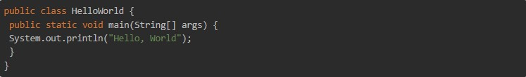
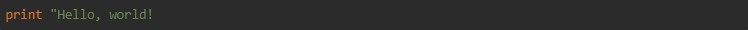
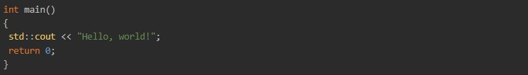
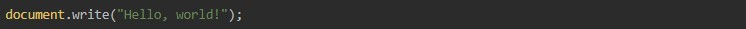
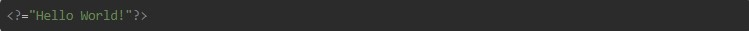

Языки программирования используют в самых разных сферах. Кроме разработчиков, они нужны робототехникам, аналитикам, системным администраторам и иногда даже дизайнерам и редакторам. На данный момент существует около 10 тысяч разнообразных языков.
Язык программирования общего назначения, который стабильно занимает высокие места в рейтингах популярности. Приложения на Java могут работать на любом компьютере, для этого создана виртуальная Java-машина. На Java активно разрабатывают мобильные приложения под операционную систему Android. Недостатки Java — медленная работа программ и большое потребление оперативной памяти.
Python легок в изучении. Программы на Python близки к естественному языку, поэтому он отлично подходит как первый язык для начинающего программиста.
Существуем много областей применения Python, но чаще всего его используют в веб-разработке, data science (машинное обучение, анализ данных и визуализация), автоматизации процессов. Это очень распространенный язык, на нем реализовано большое количество проектов. Python активно используют в Google, на нем написана большая часть исходного кода YouTube.
Некоторые команды были заимствованы из Pascal, C и C++. Он вобрал в себя лучшие черты других языков программирования. Над его улучшением постоянно работают программисты по всему миру.
Сильные стороны Python — модульность и возможность интеграции с другими языками, обладает простым синтаксисом, а среди недостатков — низкая скорость работы и большое потребление памяти.
Этот язык — один из самых популярных, он широко используется для разработки программного обеспечения. С его помощью программисты создают операционные системы, разнообразные прикладные программы, драйверы устройств, приложения для встраиваемых систем и игры. Синтаксис C++ унаследован от языка C.
JavaScript и Java — это разные и совершенно не похожие языки.
JavaScript применяют для создания графики, мобильных и веб-приложений, в браузерных операционных системах. JS позволяет сделать веб-сайты «живыми» (всплывающие окна, анимация, кнопки выбора, поля ввода данных и тд). Он очень универсален и довольно легок в изучении.
Широко применяется для создания веб-приложений, лидирует по применению для создания динамических сайтов. PHP прошел быструю эволюцию и стал востребован среди программистов. Однако программисты его часто критикуют за несогласованный синтаксис.
Технологии не стоят на месте. В определенный момент сообщество разработчиков может обнаружить, что для его потребностей больше не хватает текущих языков – тогда рано или поздно появится новый, заточенный под актуальные задачи. Иногда языки «переписывают» и дополняют: так из JavaScript появился TypeScript, который отличается синтаксисом и особенностями, но преобразуется в тот же JavaScript.
Бывает и так, что язык пишут для решения конкретной большой задачи или даже для отдельного устройства.
Язык существует, пока есть задачи, для которых он используется. Со временем старые языки могут стать неудобными, неподходящими для актуальных потребностей разработчиков: тогда они постепенно будут пропадать. Но это очень медленный процесс, чтобы отказаться от языка, понадобится перевести весь старый код на другие технологии.